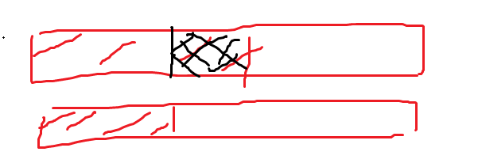

$Div.1$
A Messy
容易发现在不改变左括号,右括号个数的情况下,把这个序列变成任意一个序列都是可以的.
考虑把括号序列搞成 $()()()()\dots()((()))$ ,即前面放了 $k-1$ 对括号,剩下的括号全部嵌起来,显然是合法的.
对于每个位置 $i$ ,找到从 $i$ 往后第一个需要的括号的位置 $x$ ,把 $[i,x]$ 这一段翻一下就可以了.
1 | //%std |
B Optimal Subsequences
对于每个数定义一个优先度,数字越大,优先度越高,若数字相同,则位置靠前的优先度更高.
那么长度为 $k$ 的最优子序列就是由优先度最大的 $k$ 个数字构成的.
把所有询问离线下来,按照优先度从高到低加入每个数,加入了 $k$ 个数时,就回答所有 $k_i=k$ 的询问.
需要用一颗平衡树,或者权值线段树,来支持插入和求第 $pos$ 个数字.
比赛时没离线询问,写了主席树.
1 | //%std |
C Arson In Berland Forest
需要先观察到,每个初始起火的点,最后会形成一个以它为中心,每条边上有 $2T+1$ 个点的正方形.
因为这些正方形可以重叠,所以答案显然是可以二分的.
预处理一个二维前缀和,二分答案后检查是否能用这样的正方形覆盖住所有着火点.
1 | //%std |
D Wrong Answer on test 233
考虑利用生成函数,将 “变换后的答案与变换前的答案之差” 看做 $x$ 的次数.
若位置 $i$ 与位置 $(i\bmod n)+1$ 上的数相同,则无论怎样取,这个差都不会变,记这样的位置有 $a$ 个.
若位置 $i$ 与位置 $(i\bmod n)+1$ 上的数不同,则各有 $1$ 种选法让差 $+1,-1$ ,其余的不变,记这样的位置有 $b$ 个.
记 $p=k-2$ ,则这个生成函数为 $k^a\cdot (x+x^{-1}+p)^b$ ,只有次数 $>0$ 的项的系数会被计入答案.
把后面的式子乘上 $x^b$ ,后面就变成了 $(x^2+px+1)^b$ ,只有次数 $>b$ 的项的系数会被计入答案.
直接用多项式快速幂乘出来,常数太大,不可取.
枚举 $px$ 选了 $i$ 个,则
$$
k^a\cdot (x^2+px+1)^b=k^a\cdot \sum_{i=0}^b {b\choose i}p^{b-i}x^{b-i}\cdot \sum_{j=0}^i {i\choose j}x^{2j}
$$
由于只算次数 $>b$ 的项的系数和,对于后面那个 $\sum$ ,只有 $2j>i$ 的 $i\choose j$ 会产生贡献.
当 $i$ 为奇数时,这个贡献是 $2^{i-1}$ ,当 $i$ 为偶数时,这个贡献是 $\frac{2^i-{i\choose i/2}}{2}$ .
时间复杂度 $O(n)$ .
1 | //%std |
E Not Same
先把所有元素从小到大排序,考虑一列一列地去构造出这个解.
这里的 $n$ 指还需要构造的元素的数目.
如果最大的元素 $x<n$ ,则可以从前往后递归构造解.
即,先求出后 $n-1$ 个元素的解,记第一个元素为 $y$ ,再将前 $y$ 个操作加上第一个元素.
如果最大的元素 $=n$ ,这样做时,最后一步就会出现问题.
此时应该构造出一个解,有 $n$ 次操作都包含了最后那个元素,最多有 $1$ 次操作没有包含.
如果次大的元素也 $=n$ ,就将所有除了最后一个元素的 $=n$ 的元素减去 $1$ ,递归构造前 $n-1$ 个元素的解.
次大元素现在是 $n-1$ ,所以前面只可能构造出 $n-1$ 或者 $n$ 个操作.
将这些操作全部加上最后一个元素,若操作数是 $n-1$ ,则还需要加上一个只包含最后一个元素的操作.
如果次大的元素 $<n$ ,记它为 $x$ ,则可以先将开头的 $n-x-1$ 个数全部操作 $1$ 次,.
然后递归构造前 $n-1$ 个元素的解,这样也会得到 $n-1$ 或者 $n$ 个操作.
将这些操作全部加上最后一个元素,若操作数是 $n-1$ ,则还需要加上一个只包含最后一个元素的操作.
1 | //%std |
F Xor-Set
考虑建出一颗管辖区间 $[0,2^{60}-1]$ 的线段树,把 $A,B$ 集合的线段各自在这棵线段树上划分出来.
那么这个线段树上一个深度为 $x$ 的节点,代表前 $x$ 位固定后,后面的 $60-x$ 位任意取,这样的数集合中都有.
那么 $A$ 集合中的一个线段树节点与 $B$ 集合中的一个线段树节点异或,贡献是容易计算的.
由于 $C$ 是集合,所以相同的数只会被算一次,那么把两者固定的长度(红色部分)取个 $\min$ ,贡献不变.

即把黑色部分也看成可以任意取.
在线段树上的意义就是,把深度较深的那个节点向上跳,跳到两者深度相同,贡献不变.
于是可以对集合 $A$ ,只给划分出来的线段树节点打标记,对集合 $B$ ,给划分出来的线段树节点的所有祖先打上标记.
利用线段树的性质可以证明,$A,B$ 各自标记的线段数目不会超过 $4n$ .
枚举每个深度,只计算深度相同的,有标记的节点之间产生的贡献,时间复杂度 $O(n^2\log 10^{18})$ .